here()[1] "/Users/kariyach/R/R-website/website"苅谷 千尋, PhD ![]()
データの結合；欠損値；5 Named Graphs(5NG)
here()[1] "/Users/kariyach/R/R-website/website"df_sample_join1 <-
read_csv("data/sample_join_学生データ.csv")
df_sample_join2 <-
read_csv("data/sample_join_スコア.csv")
df_sample_joined <- # 二つを結合させた新しいオブジェクト
df_sample_join1 |> # 結合元にしたいオブジェクト
left_join(df_sample_join2, by = "student_id") # 結合させたいオブジェクト、両方のデータフレームに共通する変数（カラム名）
df_sample_joined |>
head()# A tibble: 4 × 5
student_id name age math english
<dbl> <chr> <dbl> <dbl> <dbl>
1 1 Alice 14 85 78
2 2 Bob 15 90 85
3 3 Charlie 14 75 82
4 6 David 16 NA NAdf_sample_bind1 <- # 学生番号1から3番まで
read_csv("data/sample_bind1.csv")
df_sample_bind2 <- # 学生番号4から6番まで
read_csv("data/sample_bind2.csv")
df_sample_binded <-
bind_rows(df_sample_bind1, df_sample_bind2)
df_sample_binded |>
head()# A tibble: 6 × 3
student_id math english
<dbl> <dbl> <dbl>
1 1 85 78
2 2 90 85
3 3 75 82
4 3 75 82
5 4 60 70
6 5 95 88head(penguins)# A tibble: 6 × 8
species island bill_length_mm bill_depth_mm flipper_length_mm body_mass_g
<fct> <fct> <dbl> <dbl> <int> <int>
1 Adelie Torgersen 39.1 18.7 181 3750
2 Adelie Torgersen 39.5 17.4 186 3800
3 Adelie Torgersen 40.3 18 195 3250
4 Adelie Torgersen NA NA NA NA
5 Adelie Torgersen 36.7 19.3 193 3450
6 Adelie Torgersen 39.3 20.6 190 3650
# ℹ 2 more variables: sex <fct>, year <int>penguins |>
skim()| Name | penguins |
| Number of rows | 344 |
| Number of columns | 8 |
| _______________________ | |
| Column type frequency: | |
| factor | 3 |
| numeric | 5 |
| ________________________ | |
| Group variables | None |
Variable type: factor
| skim_variable | n_missing | complete_rate | ordered | n_unique | top_counts |
|---|---|---|---|---|---|
| species | 0 | 1.00 | FALSE | 3 | Ade: 152, Gen: 124, Chi: 68 |
| island | 0 | 1.00 | FALSE | 3 | Bis: 168, Dre: 124, Tor: 52 |
| sex | 11 | 0.97 | FALSE | 2 | mal: 168, fem: 165 |
Variable type: numeric
| skim_variable | n_missing | complete_rate | mean | sd | p0 | p25 | p50 | p75 | p100 | hist |
|---|---|---|---|---|---|---|---|---|---|---|
| bill_length_mm | 2 | 0.99 | 43.92 | 5.46 | 32.1 | 39.23 | 44.45 | 48.5 | 59.6 | ▃▇▇▆▁ |
| bill_depth_mm | 2 | 0.99 | 17.15 | 1.97 | 13.1 | 15.60 | 17.30 | 18.7 | 21.5 | ▅▅▇▇▂ |
| flipper_length_mm | 2 | 0.99 | 200.92 | 14.06 | 172.0 | 190.00 | 197.00 | 213.0 | 231.0 | ▂▇▃▅▂ |
| body_mass_g | 2 | 0.99 | 4201.75 | 801.95 | 2700.0 | 3550.00 | 4050.00 | 4750.0 | 6300.0 | ▃▇▆▃▂ |
| year | 0 | 1.00 | 2008.03 | 0.82 | 2007.0 | 2007.00 | 2008.00 | 2009.0 | 2009.0 | ▇▁▇▁▇ |
penguins |>
filter(!if_any(everything(), is.na)) |> # すべての列の欠損値を削除 「!」が除外を意味する
skim()| Name | filter(penguins, !if_any(… |
| Number of rows | 333 |
| Number of columns | 8 |
| _______________________ | |
| Column type frequency: | |
| factor | 3 |
| numeric | 5 |
| ________________________ | |
| Group variables | None |
Variable type: factor
| skim_variable | n_missing | complete_rate | ordered | n_unique | top_counts |
|---|---|---|---|---|---|
| species | 0 | 1 | FALSE | 3 | Ade: 146, Gen: 119, Chi: 68 |
| island | 0 | 1 | FALSE | 3 | Bis: 163, Dre: 123, Tor: 47 |
| sex | 0 | 1 | FALSE | 2 | mal: 168, fem: 165 |
Variable type: numeric
| skim_variable | n_missing | complete_rate | mean | sd | p0 | p25 | p50 | p75 | p100 | hist |
|---|---|---|---|---|---|---|---|---|---|---|
| bill_length_mm | 0 | 1 | 43.99 | 5.47 | 32.1 | 39.5 | 44.5 | 48.6 | 59.6 | ▃▇▇▆▁ |
| bill_depth_mm | 0 | 1 | 17.16 | 1.97 | 13.1 | 15.6 | 17.3 | 18.7 | 21.5 | ▅▆▇▇▂ |
| flipper_length_mm | 0 | 1 | 200.97 | 14.02 | 172.0 | 190.0 | 197.0 | 213.0 | 231.0 | ▂▇▃▅▃ |
| body_mass_g | 0 | 1 | 4207.06 | 805.22 | 2700.0 | 3550.0 | 4050.0 | 4775.0 | 6300.0 | ▃▇▅▃▂ |
| year | 0 | 1 | 2008.04 | 0.81 | 2007.0 | 2007.0 | 2008.0 | 2009.0 | 2009.0 | ▇▁▇▁▇ |
penguins |>
mutate(平均_体重 = mean(body_mass_g, na.rm = TRUE)) |> # body_mass_g（「体重」）列の平均を算出
select(平均_体重) |>
head()# A tibble: 6 × 1
平均_体重
<dbl>
1 4202.
2 4202.
3 4202.
4 4202.
5 4202.
6 4202.ggplot内でも欠損値を処理することもできますが、ggplotにデータを渡す前に欠損値を除外した方が安全です。ggplot以降でnaを見えなくするためにはscale_x_discrete(na.translate = FALSE)といった引数が必要です。詳しくはggplot2でna.rmが効かなくなった話（2.2.0以降）を参照して下さい
新しいquortファイルを作成した方がいいかもしれません。formatによって使用できるオプションが異なり、エラーが出る可能性があるため（instituteなど）。もしくは、適宜、コメントアウトしてください
format: pptxformat: revealjsformat: docxデータの型、数字の型を意識することが重要です
penguins |>
filter(!is.na(bill_length_mm)) |> # 欠損値を除外
filter(species == "Adelie") |> # 種をAdelieに限定
ggplot(aes(x = bill_length_mm)) + # x軸をくちばしの長さに
geom_histogram() # デフォルトでcountするのでstat不要 y軸は個数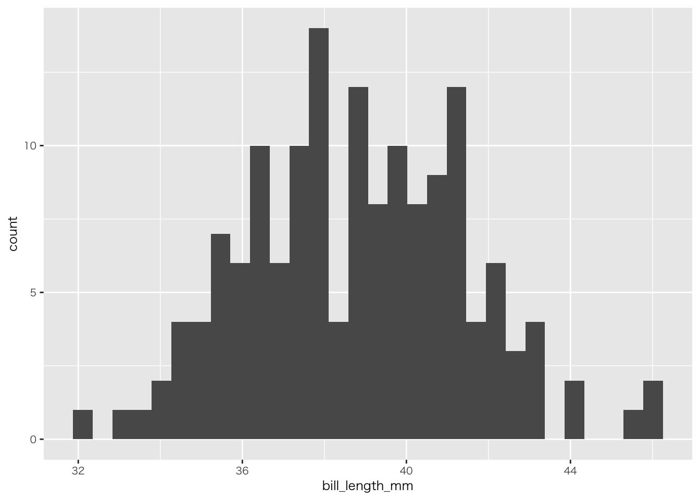
penguins |>
filter(!if_any(everything(), is.na)) |> # すべての列の欠損値を除外
ggplot(aes(x = bill_length_mm, fill = species)) +
geom_histogram()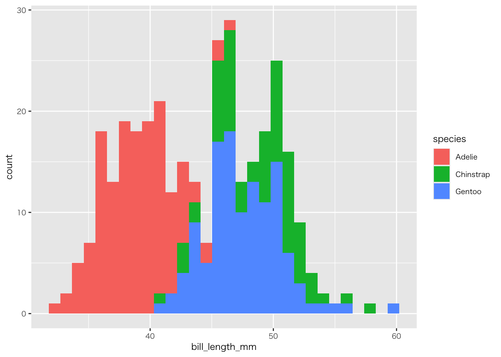
penguins |>
filter(species == "Adelie") |>
summarise( # palmerpenguinsに適当な離散変数がないので個数を算出
個数 = n()
) |>
ggplot(aes(x = "", y = 個数)) +
geom_col()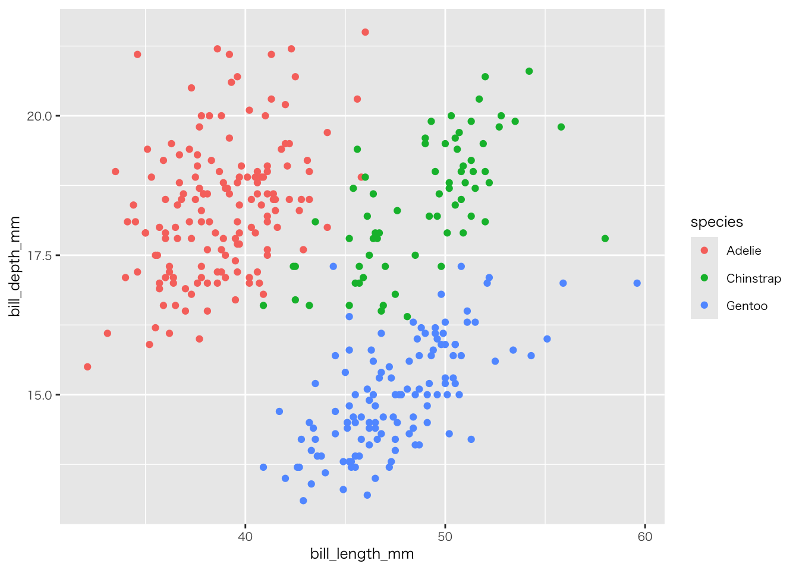
penguins |>
group_by(species) |>
summarise( # palmerpenguinsに適当な離散変数がないので個数を算出
個数 = n() # n()はn数をカウントする関数
) |>
ggplot(aes(x = species, y = 個数, fill = species)) +
geom_col()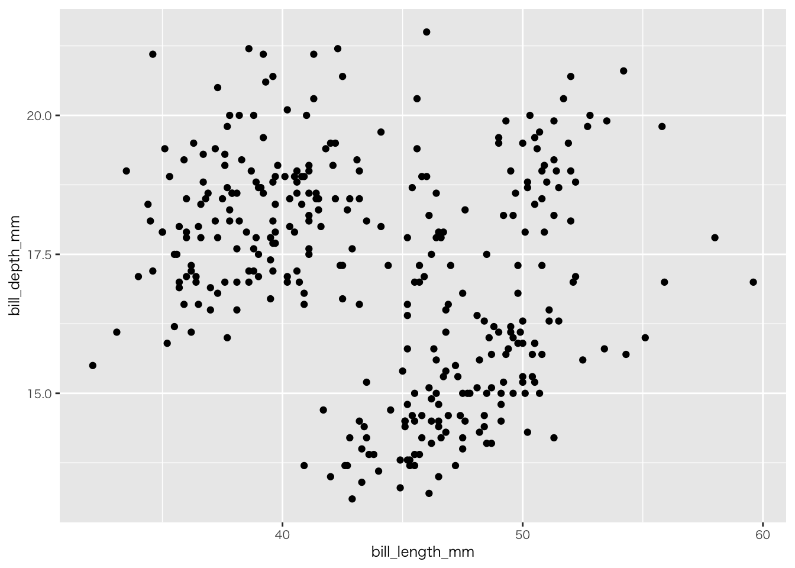
penguins |>
filter(!if_any(everything(), is.na)) |>
ggplot(aes(x = bill_length_mm, y = bill_depth_mm)) +
geom_point()penguins |>
filter(!if_any(everything(), is.na)) |>
ggplot(aes(x = bill_length_mm, y = bill_depth_mm, colour = species)) +
geom_point()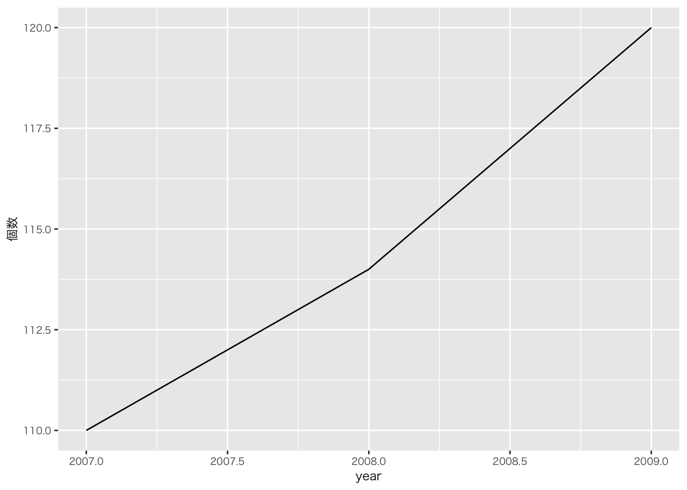
penguins |>
filter(!if_any(everything(), is.na)) |>
ggplot(aes(x = bill_length_mm, y = bill_depth_mm)) +
geom_smooth()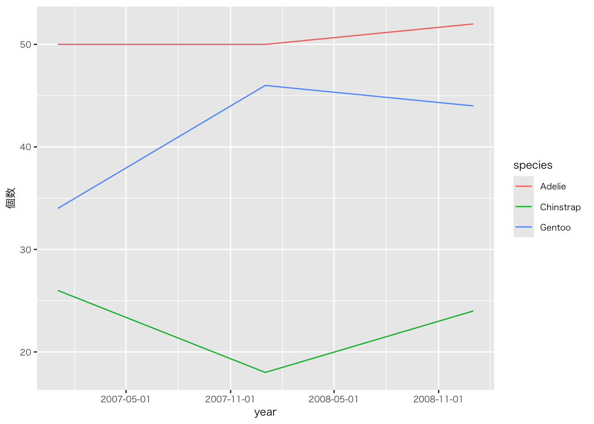
penguins |>
filter(!if_any(everything(), is.na)) |>
ggplot(aes(x = bill_length_mm, y = bill_depth_mm, colour = species)) +
geom_smooth()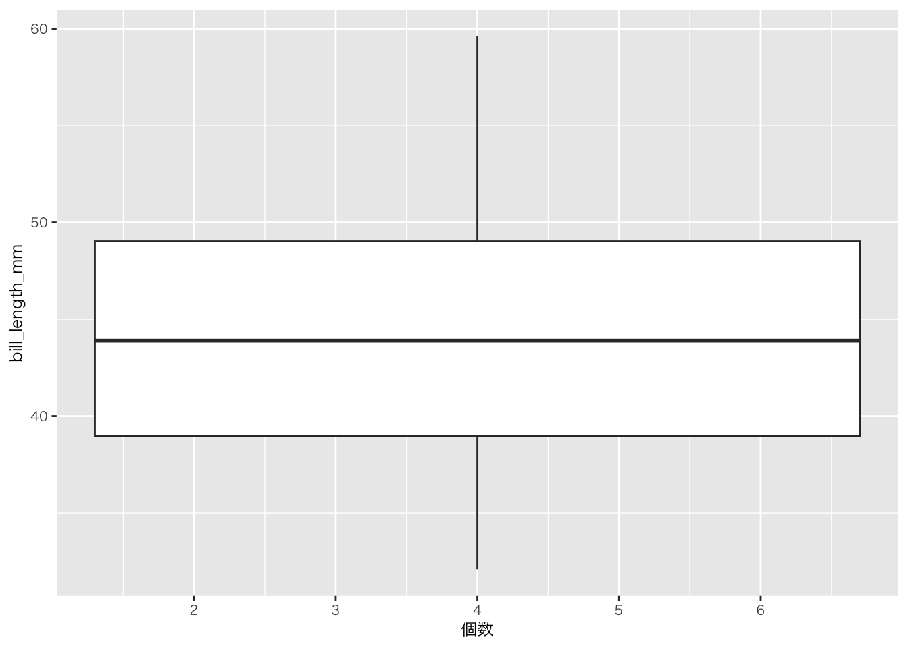
penguins |>
group_by(year) |> # yearはdate型ではないが、動く
summarise(
個数 = n()
) |>
ggplot(aes(x = year, y = 個数)) +
geom_line()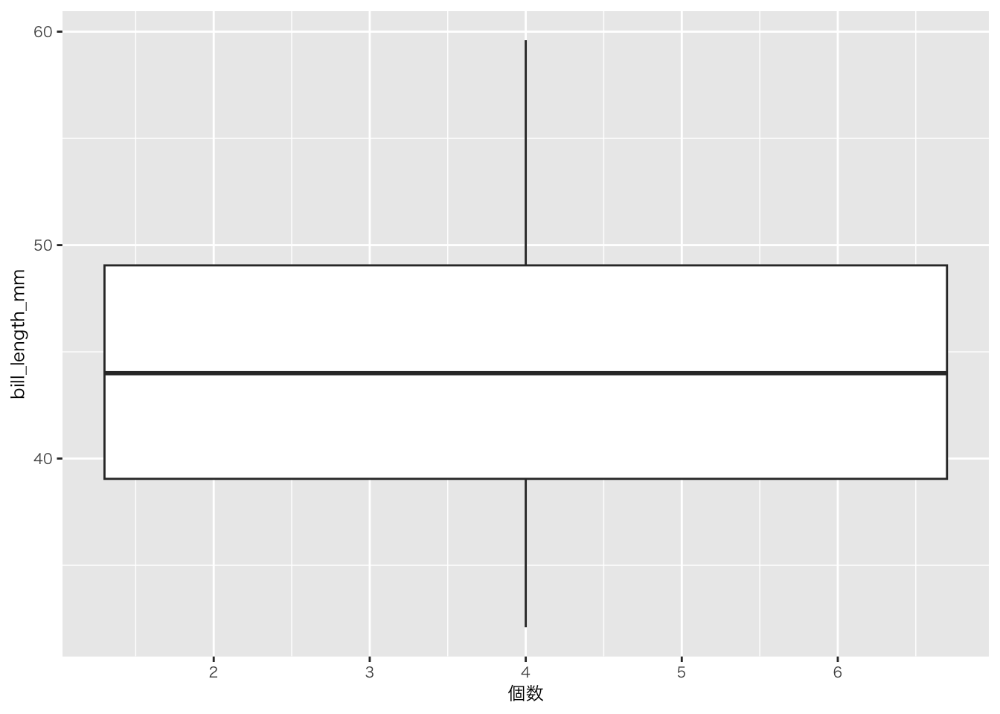
penguins |>
mutate(year = as.Date(paste0(year, "-01-01"))) |> # year列を日付型に変換（1月1日として）
group_by(year, species) |>
summarise(
個数 = n()
) |>
ggplot(aes(x = year, y = 個数, colour = species)) +
geom_line() +
scale_x_date(date_breaks = "6 month") # data型であればこのようにラベルを付けられる（今回のデータは形式的にすべて1月1日しているため、このラベルに意味はない（5月1日や11月1日というデータを持っていないため））
penguins |>
filter(!if_any(everything(), is.na)) |>
group_by(bill_length_mm) |>
summarise(
個数 = n()
) |>
ggplot(aes(x = 個数, y = bill_length_mm)) +
geom_boxplot()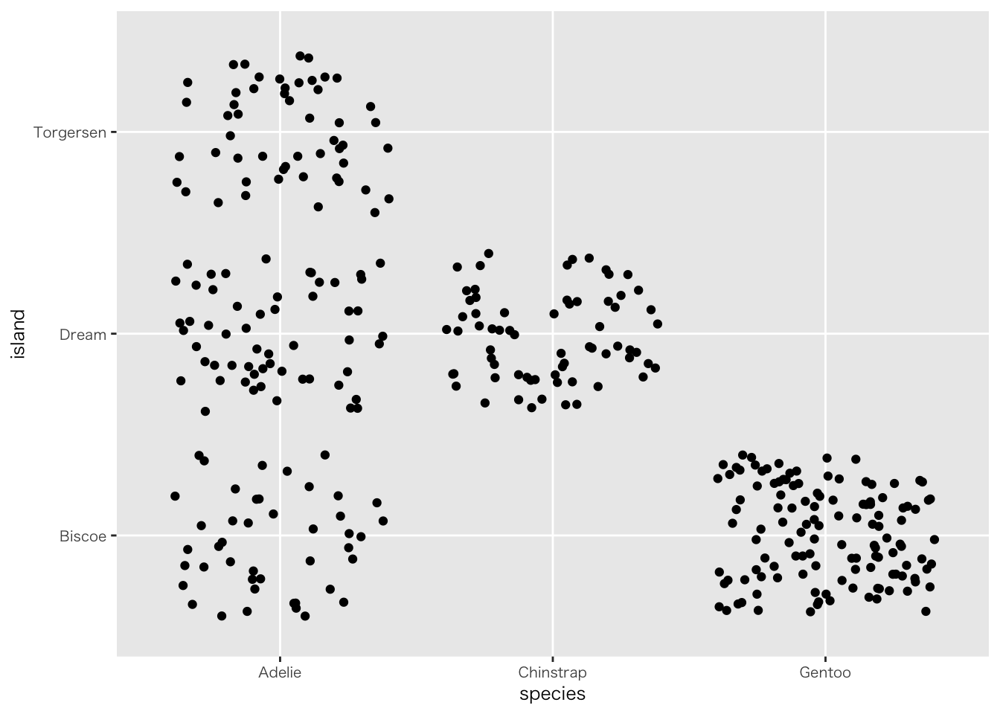
penguins |>
filter(!if_any(everything(), is.na)) |>
group_by(bill_length_mm, species) |>
summarise(
個数 = n()
) |>
ggplot(aes(x = 個数, y = bill_length_mm, colour = species)) +
geom_boxplot()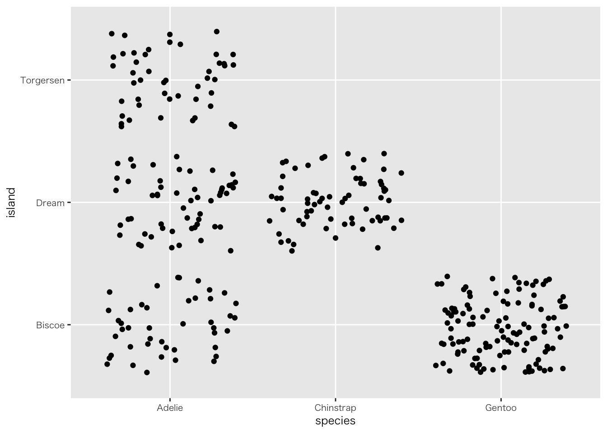
penguins |>
group_by(bill_length_mm, species) |>
summarise(
個数 = n()
) |>
ggplot(aes(x = 個数, y = bill_length_mm, colour = species)) +
geom_violin()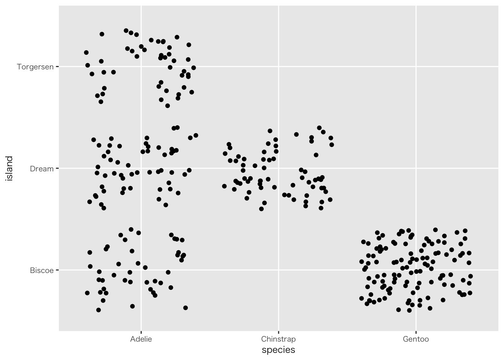
penguins |>
filter(!if_any(everything(), is.na)) |>
ggplot(aes(x = species, y = island)) +
geom_jitter() 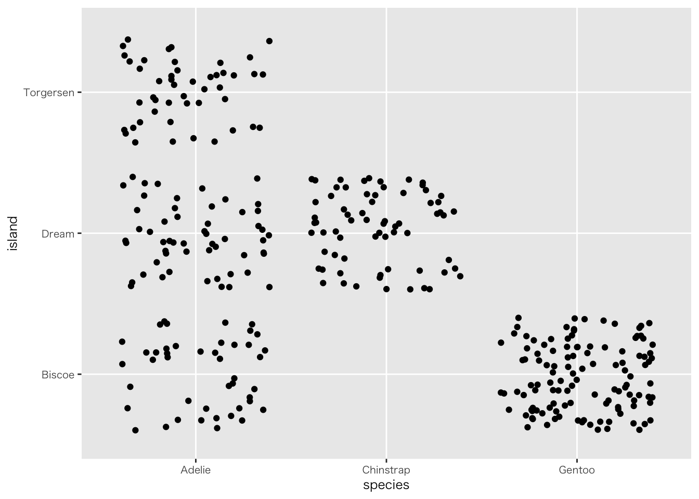
palmerpenguinsに適当な離散変数がないので、カテゴリ変数を使っています